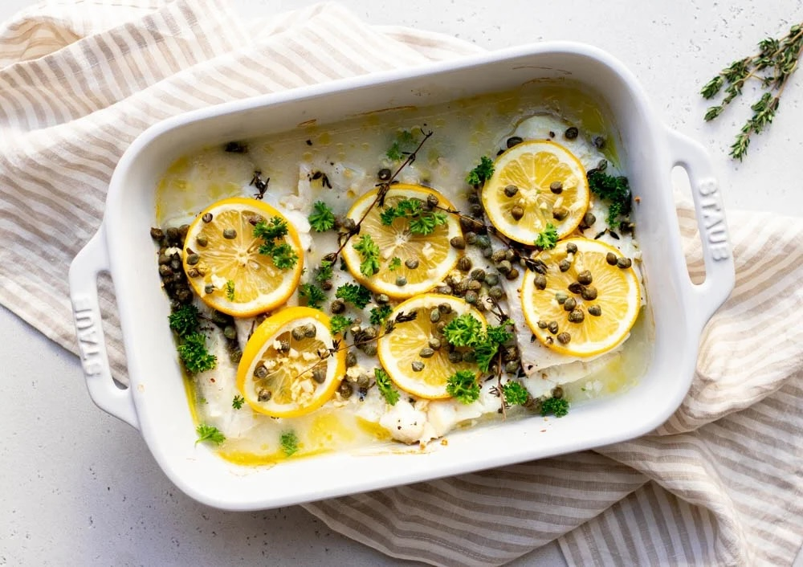

Baked Cod with Lemons, Capers, & Leeks

Description
A simple and easy to prepare fish dish, this one is especially good for a "Fish Friday" casual dinner. The cod can be substituted with any whitefish you like. In my experience, tilapia is especially good prepared in this manner.
Ingredients
- ½ lb. leeks, trimmed and rinsed well
- 2 tablespoons olive oil
- 1½ lbs.cod fillets
- 3 tablespoons capers, rinsed well
- 1 lemon, sliced thin
- Juice of 1 lemon
- Salt and pepper to taste
Steps
- Preheat oven to 400℉. Pat leeks dry and slice in half lengthwise.
- Place leeks in an 8×8" baking dish, cut side down, and drizzle with olive oil. Season with salt and pepper, and place in the oven until the leeks are slightly brown, about 25 minutes.
- Remove leeks from oven and place cod fillets on top of them. Sprinkle lemon juice over fish, and distribute the capers and lemon slices on top of the fillets. The slices of lemon should cover the cod almost entirely.
- Place baking dish back in the oven and roast until the fish is cooked thoroughly, flaking easily with a fork. Typically, this will take 25-30 minutes of additional baking.
- Remove from oven and serve, ensuring the cod is placed on top of the leeks. If desired, additional lemon wedges can be served alongside the completed dish, as the added acid from the lemon helps to accentuate the flavor of both the fish and leeks.